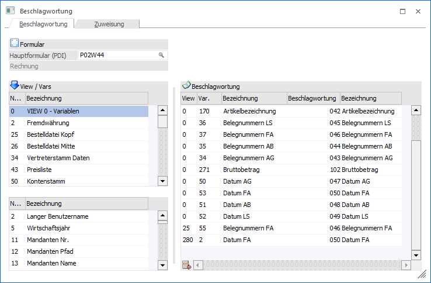
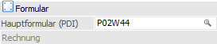
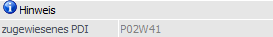
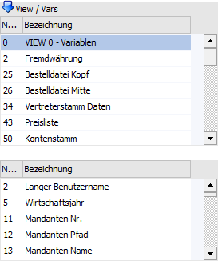
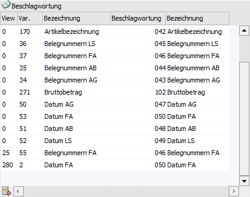
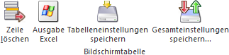
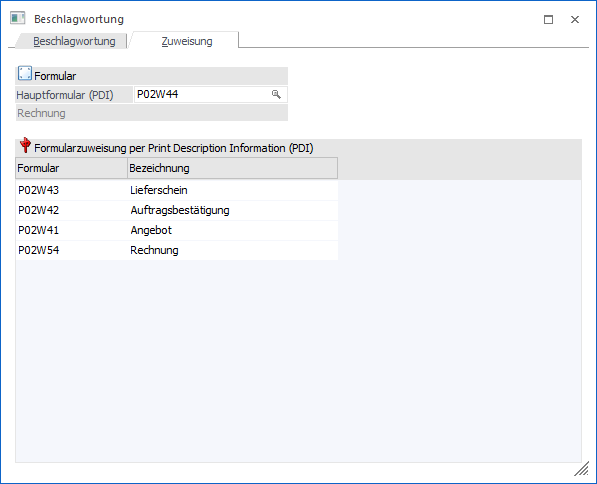
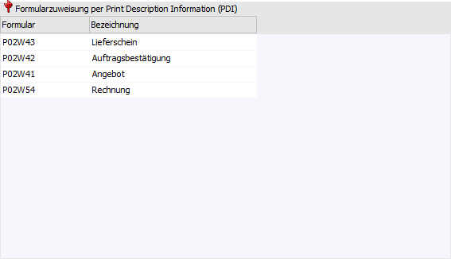
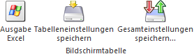
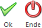

Über den Menüpunkt…
1 Archiv
1 Beschlagwortung
1 Beschlagwortung
… werden die von mesonic bzw. selbst angelegten Schlagwörter mit den Informationen der WinLine Formular verknüpft. Hierbei ist zu beachten, dass alle dynamischen Informationen in der WinLine allgemein und in den Formularen im speziellen unter einer Nummernkombination abgelegt werden.
Beispiel
Die Information "Auftragsnummer" hat die Kombination "25/044". Soll ein Beleg durch Eingabe der Auftragsnummer im Archiv zu finden sein, soll muss z.B. dem Schlagwort "044 - Belegnummer AB" die Variable "25/044 - Auftragsnummer" zugeordnet werden.
Register "Beschlagwortung"

In diesem Register wird für ein spezielles Formular die Verknüpfung zwischen Formularvariable und Schlagwörtern herstellt.
Formular

Ø Hauptformular (PDI)
An dieser Stelle wird das (Haupt-)Formular (PDI) hinterlegt, für welches die Beschlagwortung definiert werden soll.
Hinweis
Alle Formulare eines Bereichs (z.B. Angebote oder Mahnungen) werden über das PDI (Print Description Information) zusammengefasst. Das PDI gibt hierbei u.a. vor, welche Variablen zur Verfügung stehen. D.h. es muss die Beschlagwortung nicht für die z.B. 6 unterschiedlichen Angebotsformulare definiert werden, sondern nur 1x für das Angebots-PDI.
Hinweis

Ø zugewiesenes PDI
Wenn ein Formular aufgerufen wird, welches im Register "Zuweisung" bereits einem PDI zugewiesen wurde, so wird das entsprechende Hauptformular geladen (Bereich "Formular") und hier die ursprüngliche PDI-Eingabe dargestellt.
Tabelle "View / Vars"

In der oberen Tabelle werden alle Datenbereiche angezeigt, welche dem Formular zur Verfügung stehen. Durch Anwahl eines Bereichs (Doppelklick oder Enter) werden die entsprechend Datenfelder in der unteren Tabelle dargestellt. Dort kann das Datenfeld per Doppelklick oder Enter in die rechte Tabelle "Beschlagwortung" übergeben werden. D.h. es werden jene Felder ausgewählt, dessen Inhalt im späteren Verlauf in ein Schlagwort übergeleitet werden sollen.
Tabelle "Beschlagwortung"

Nach Auswahl der "View / Vars" werden diese in der Tabelle "Beschlagwortung" mit den gewünschten Schlagwörtern verknüpft. Hierfür steht in der 4. Spalte der Tabelle pro Zeile die Auswahlbox "Beschlagwortung" zur Verfügung.
Hinweis
Bei der Archivierung und anschließender Analyse wird der Inhalt der "Variable" (View / Var) als Beschlagwortung (Suchbegriff) in das Schlagwort abgelegt.
Tabellenbuttons

Ø Zeile löschen
Durch Anwahl dieses Buttons wird die aktive Zeile aus der Tabelle "Beschlagwortung" entfernt.
Ø Ausgabe Excel
Durch Anwahl des Buttons "Ausgabe Excel" wird der Inhalt der Tabelle an Microsoft Excel übergeben.
Ø Tabelleneinstellungen speichern
Die Spalten einer Tabelle können grundsätzlich an beliebige Positionen verschoben, bzw. in der Breite entsprechend angepasst werden. Durch Anwahl des Buttons "Tabelleneinstellungen speichern" werden die Einstellungen benutzerspezifisch gespeichert und bei dem nächsten Aufruf des Programmpunktes wieder vorgeschlagen.
Ø Gesamteinstellungen speichern
Im Gegensatz zu "Tabelleneinstellungen speichern" können mit "Gesamteinstellungen speichern" mehrere Tabellenaufbauten gespeichert und nach Wunsch geladen werden.
Register "Zuweisen"

Da der Aufbau vieler Formulare sehr ähnlich ist, kann eine Zuordnung, welche für ein Formular getroffen wurde, auch für andere Formulare angewendet werden. Dieses passiert nicht über ein Kopieren, sondern über Zuweisen von Formularen untereinander.
Beispiele
Die Zuordnungen, die für das Formular "Faktura" (P02W44) getroffen wurden, sollen auch für das Formular "Lieferschein" (P02W43) gelten.
Die Zuordnungen, die für das Formular "Mahnung Stufe 1" (P01WM010) gemacht wurden, sollen auch für das Formular "Mahnung Stufe 2" (P01WM020) gelten.
Formular
Ø Hauptformular (PDI)
An dieser Stelle wird das (Haupt-)Formular (PDI) hinterlegt, auf welches verwiesen werden soll. Die Zuweisung selber erfolgt über die darunter dargestellte Tabelle.
Tabelle "Formularzuweisung per Print Description Information (PDI)"

In der Tabelle werden die zugewiesenen Formulare dargestellt. Neue Zeilen bzw. Änderungen werden durch Drücken des Buttons "Ok" bzw. der Taste F5 im Register "Beschlagwortung" gespeichert.
Ø Formular
An dieser Stelle wird das Formular (PDI) hinterlegt, für welches die Beschlagwortung (Verknüpfungen) des Hauptformulars ebenfalls gelten soll. In diesem Feld kann über die Taste F9 oder das "Lupen" Symbol nach Formularen gesucht werden.
Ø Bezeichnung
An dieser Stelle wird die Formularbezeichnung als Informationsfeld dargestellt.
Tabellenbuttons

Ø Ausgabe Excel
Durch Drücken des Buttons "Ausgabe Excel" kann die Tabelle an Excel ausgegeben werden.
Ø Tabelleneinstellungen speichern
Die Spalten einer Tabelle können grundsätzlich an beliebige Positionen verschoben, bzw. in der Breite entsprechend angepasst werden. Durch Anwahl des Buttons "Tabelleneinstellungen speichern" werden die Einstellungen benutzerspezifisch gespeichert und bei dem nächsten Aufruf des Programmpunktes wieder vorgeschlagen.
Ø Gesamteinstellungen speichern
Im Gegensatz zu "Tabelleneinstellungen speichern" können mit "Gesamteinstellungen speichern" mehrere Tabellenaufbauten gespeichert und nach Wunsch geladen werden. Zusätzlich werden Sonderfunktionen der Tabelle (z.B. "Spalte gruppieren") ebenfalls bei der Speicherung bedacht.
Buttons

Ø Ok (nur im Register "Beschlagwortung")
Durch Drücken des Buttons "OK" bzw. der Taste F5 werden die vorgenommenen Einstellungen beider Register gespeichert.
Ø Ende (nur im Register "Beschlagwortung")
Durch Drücken des Buttons "Ende" bzw. Taste ESC wird das Fenster geschlossen und alle nicht gespeicherte Einstellungen verworfen.